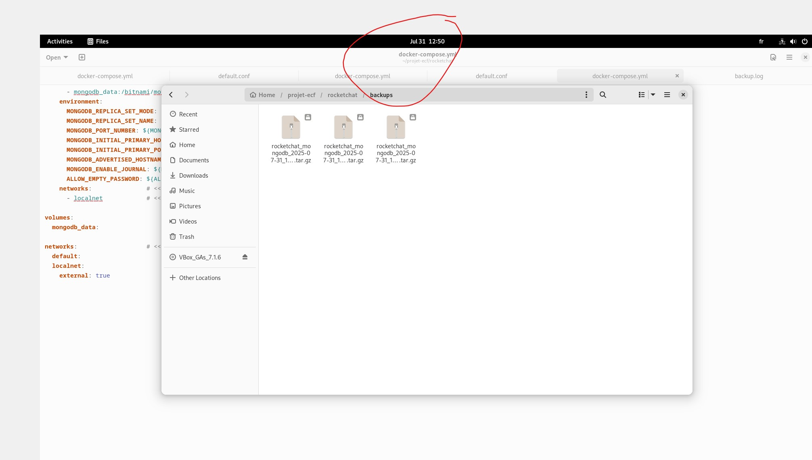
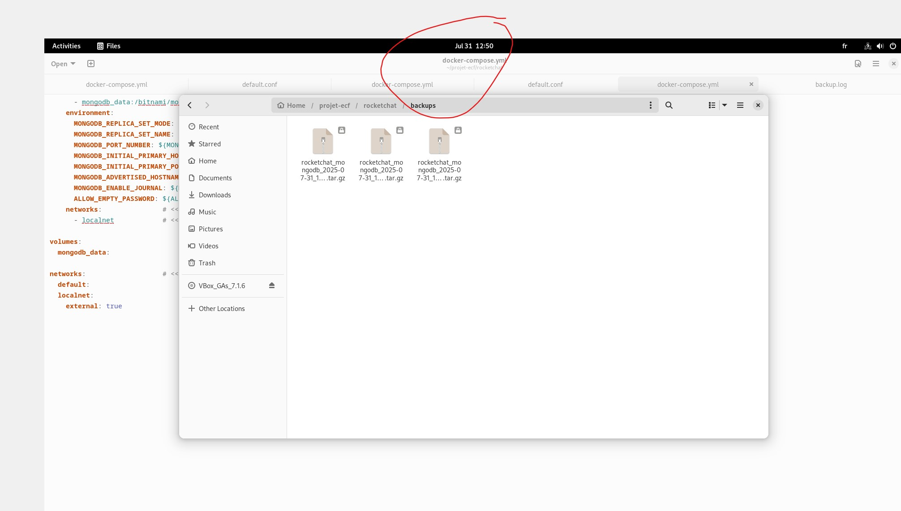

Rocket.Chat – Sauvegardes Docker automatisées (MongoDB) & Restauration

 

Docker : Sauvegardes Rocket.Chat (MongoDB)
Dans une VM Debian 12, j’ai mis en place une stratégie de sauvegarde automatisée des volumes Docker de Rocket.Chat (base MongoDB) avec un script Bash, une planification cron et une rotation des archives. Procédure de restauration validée.
- Catégorie : Infrastructure & Exploitation
- Contexte : VM Debian 12 (local)
- Livrables : Script de backup + restauration, logs, rotation 7 jours
Dans le cadre d’une collectivité, plusieurs applications sont conteneurisées (Rocket.Chat, Nextcloud, GLPI). Pour assurer la continuité d’activité et la sécurité des données, j’ai industrialisé la sauvegarde des volumes Docker en prenant Rocket.Chat comme cas d’usage reproductible (stack simple, volume bien identifié).
- Automatiser la protection des données (script Bash + cron).
- Mettre en place une rétention et des logs.
- Valider une restauration rapide (procédure PRA).
Les données Rocket.Chat sont portées par MongoDB via un volume dédié. Extrait simplifié
du docker-compose.yml :
services:
mongodb:
image: bitnami/mongodb:latest
volumes:
- mongodb_data:/bitnami/mongodb
rocketchat:
image: rocket.chat:latest
depends_on: [mongodb]
volumes:
mongodb_data: {}
👉 Toute la persistance est dans mongodb_data : c’est ce volume qu’on sauvegarde/restaure.
Arborescence :
/home/vboxuser/projet-ecf/rocketchat/
├── docker-compose.yml
├── backup.sh
└── backups/ # archives .tar.gz horodatées
Script backup.sh :
#!/bin/bash
set -euo pipefail
DATE=$(date +'%Y-%m-%d_%H-%M-%S')
BACKUP_DIR="/home/vboxuser/projet-ecf/rocketchat/backups"
VOLUME_NAME="mongodb_data"
ARCHIVE_NAME="rocketchat_mongodb_${DATE}.tar.gz"
KEEP_DAYS=7
mkdir -p "$BACKUP_DIR"
# 1) Stop pour cohérence MongoDB (recommandé)
docker compose down
# 2) Sauvegarde du volume via BusyBox
docker run --rm -v ${VOLUME_NAME}:/data -v "$BACKUP_DIR":/backup busybox \
tar czvf "/backup/${ARCHIVE_NAME}" /data
# 3) Redémarrage de la stack
docker compose up -d
# 4) Rotation 7 jours
find "$BACKUP_DIR" -type f -name "*.tar.gz" -mtime +$KEEP_DAYS -delete
Planification cron (tous les jours à 2h) :
crontab -e
0 2 * * * /home/vboxuser/projet-ecf/rocketchat/backup.sh >> /home/vboxuser/projet-ecf/rocketchat/backup.log 2>&1
Test minute pour valider immédiatement :
* * * * * /home/vboxuser/projet-ecf/rocketchat/backup.sh >> /home/vboxuser/projet-ecf/rocketchat/backup.log 2>&1
# Attendre 2-3 minutes → plusieurs .tar.gz apparaissent
Étapes :
# 1) Stopper la stack
cd ~/projet-ecf/rocketchat
docker compose down
# 2) Choisir l’archive
ls backups/
# ex: rocketchat_mongodb_2025-07-31_12-45-00.tar.gz
# 3) Restaurer dans le volume
docker run --rm -v mongodb_data:/data \
-v ~/projet-ecf/rocketchat/backups:/backup busybox \
tar xzvf /backup/rocketchat_mongodb_2025-07-31_12-45-00.tar.gz -C /
# 4) Redémarrer
docker compose up -d
Résultat : Rocket.Chat redémarre avec l’état exact sauvegardé.
- Secrets externalisés (
.env), pas d’identifiants en clair. - Logs de sauvegarde :
backup.logpour audit et diagnostic. - Rétention configurable (
KEEP_DAYS). - Volumes dédiés → relance idempotente (
docker compose up -d).
- Sauvegardes automatisées et tournantes (archives horodatées).
- Procédure PRA documentée et testée (restauration fonctionnelle).
- Solution réutilisable pour d’autres services Docker (Nextcloud, GLPI…).
- Culture exploitation : scripts, logs, rétention, vérification par cron.